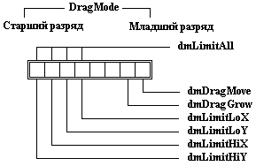

|
|
|
|
Поле DragMode
Поле DragMode размером в один байт определяет, как ведет себя видимый элемент при перемещении владельца. Напомню, что Turbo Vision позволяет перемещать окно на экране с помощью мыши, если «схватить» мышью верхнюю рамку окна.
Должен заметить, что мне не удалось добиться сколько-нибудь заметных результатов при различных установках поля DragMode. По умолчанию Turbo Vision устанавливает DragMode = 32 = dmLimitLoY.
На рис. 17.10 указаны разряды поля DragMode.

Puc. 17.10. Разряды поля Drag
dmDragMove
Установленный флаг dmDragMode разрешает перемещать окно с помощью мыши.
dmDragGrow
Если флаг установлен, окно может изменять свои размеры.
dmLimitLoX
Если флаг установлен, левая сторона видимого элемента не может выходить за границы своего владельца.
dmLimitLoY
Если флаг установлен, верхняя часть видимого элемента не может выходить за границы своего владельца.
dmLimitHiX
Если флаг установлен, правая сторона видимого элемента не может выходить за границы своего владельца.
dmLimitHiY
Если флаг установлен, нижняя часть видимого элемента не может выходить за границы своего владельца.
dmLimitAll
Если флаг установлен, ни одна часть видимого элемента не может выходить за границы своего владельца.
|
|
|
|